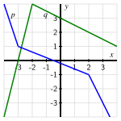
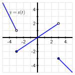

¿Qué son las funciones por partes y cuáles son las diferentes formas en que podemos representarlas?
En aritmética, ejecutamos procesos donde tomamos dos números para generar un nuevo número. Por ejemplo, \(2 + 3 = 5\text{:}\) el número \(5\) resulta de sumar \(2\) y \(3\text{.}\) De manera similar, podemos multiplicar dos números para generar uno nuevo: \(2 \cdot 3 = 6\text{.}\)
Podemos trabajar de manera similar con funciones. De hecho, ya hemos visto una forma sofisticada de combinar dos funciones para generar una nueva función relacionada a través de la composición. Si \(g : A \to B\) y \(f : B \to C\text{,}\) entonces sabemos que hay una nueva función relacionada \(f \circ g : A \to C\) definida por el proceso \((f \circ g)(x) = f(g(x))\text{.}\) Dicho de otra manera, la nueva función \(f \circ g\) resulta de ejecutar \(g\) primero, seguido de \(f\text{.}\)
Así como podemos sumar, restar, multiplicar y dividir números, también podemos sumar, restar, multiplicar y dividir funciones para crear una nueva función a partir de dos o más funciones dadas.
Preview Activity1.9.1.
Considera las funciones \(f\) y \(g\) definidas por Table 1.9.1 y las funciones lineales por partes \(p\) y \(q\) definidas por Figure 1.9.2. Supón que las líneas en la figura pasan por coordenadas de números enteros donde parece que lo hacen; por ejemplo, \((2,2)\) está en el gráfico de \(q\text{,}\) y \((3,-3)\) está en el gráfico de \(p\text{.}\)
\(x\)
0
1
2
3
4
\(f(x)\)
5
10
15
20
25
\(g(x)\)
9
5
3
2
3
Table1.9.1.Tabla que define las funciones \(f\) y \(g\text{.}\)
Figure1.9.2.Gráficos que definen las funciones \(p\) y \(q\text{.}\)
¿Hay algún valor de \(x\) en el intervalo \(-4 \le x \le 4\) para el cual \(s(x)\) no esté definido? Si no, explica por qué; si es así, determina todos esos valores, con justificación.
Subsection1.9.1Aritmética con funciones
En la mayoría de las matemáticas hasta el cálculo, el objeto principal que estudiamos son los números. Hacemos preguntas como
“¿qué número(s) forman soluciones a la ecuación \(x^2 - 4x - 5 = 0\text{?}\)”
“¿qué número es la pendiente de la línea \(3x - 4y = 7\text{?}\)”
“¿qué número se genera como salida por la función \(f(x) = \sqrt{x^2 + 1}\) con la entrada \(x = -2\text{?}\)”
Ciertamente también estudiamos patrones generales como se ven en funciones y ecuaciones, pero esto usualmente ocurre a través de un examen de los números mismos, y pensamos en los números como los objetos principales sobre los que se actúa.
Esto cambia en el cálculo. En el cálculo, los objetos fundamentales que se estudian son las funciones mismas. Una función es un objeto matemático mucho más sofisticado que un número, en parte porque una función puede pensarse en términos de su gráfica, que es una colección infinita de pares ordenados de la forma \((x,f(x))\text{.}\)
A menudo es útil mirar la fórmula de una función y observar la estructura algebraica. Por ejemplo, dada la función cuadrática
podríamos beneficiarnos de pensar en esto como la suma de tres funciones más simples: la función constante \(c(x) = -7\text{,}\) la función lineal \(s(x) = 5x\) que pasa por \((0,0)\) con pendiente \(m = 5\text{,}\) y la función cuadrática básica cóncava hacia abajo \(w(x) = -3x^2\text{.}\) De hecho, cada una de las funciones más simples \(c\text{,}\)\(s\text{,}\) y \(w\) contribuyen a hacer que \(q\) sea la función que es. De igual manera, si estuviéramos interesados en la función \(p(x) = (3x^2 + 4)(9 - 2x^2)\text{,}\) podría ser natural pensar en las dos funciones más simples \(f(x) = 3x^2 + 4\) y \(g(x) = 9 - 2x^2\) que se están multiplicando para producir \(p\text{.}\)
Así llegamos naturalmente a las ideas de sumar, restar, multiplicar o dividir dos o más funciones, y por lo tanto introducimos las siguientes definiciones y notación.
Definition1.9.3.
Sean \(f\) y \(g\) funciones que comparten el mismo dominio. Entonces,
La suma de \(f\) y \(g\) es la función \(f + g\) definida por \((f+g)(x) = f(x) + g(x)\text{.}\)
La diferencia de \(f\) y \(g\) es la función \(f - g\) definida por \((f-g)(x) = f(x) - g(x)\text{.}\)
El producto de \(f\) y \(g\) es la función \(f \cdot g\) definida por \((f \cdot g)(x) = f(x) \cdot g(x)\text{.}\)
El cociente de \(f\) y \(g\) es la función \(\frac{f}{g}\) definida por \(\left( \frac{f}{g} \right)(x) = \frac{f(x)}{g(x)}\) para todo \(x\) tal que \(g(x) \ne 0\text{.}\)
Activity1.9.2.
Considera las funciones \(f\) y \(g\) definidas por Figure 1.9.4 y Figure 1.9.5. Supón que las líneas y curvas dadas pasan por puntos de intersección en la cuadrícula cuando parece plausible. Por ejemplo, \((0,2.5)\) y \((3,-0.5)\) están en el gráfico de \(f\text{,}\) y \((-1,3)\) y \((1.5, 1.5)\) están en el gráfico de \(g\text{.}\)
Figure1.9.4.La función \(f\text{.}\)
Figure1.9.5.La función \(g\text{.}\)
Determina el valor exacto de \((f+g)(0)\text{.}\)
Determina el valor exacto de \((g-f)(1)\text{.}\)
Determina el valor exacto de \((f \cdot g)(-1)\text{.}\)
¿Hay algún valor de \(x\) para el cual \(\left( \frac{f}{g} \right)(x)\) no esté definido? Si no, explica por qué. Si es así, determina los valores y justifica tu respuesta.
¿Para qué valores de \(x\) es \((f \cdot g)(x) = 0\text{?}\) ¿Por qué?
¿Hay algún valor de \(x\) para el cual \((f-g)(x) = 0\text{?}\) ¿Por qué o por qué no?
Subsection1.9.2Combinando funciones en contexto
Cuando trabajamos en entornos aplicados con funciones que modelan fenómenos en el mundo que nos rodea, a menudo es útil pensar cuidadosamente sobre las unidades de varias cantidades. Analizar las unidades puede ayudarnos tanto a entender la estructura algebraica de las funciones y las variables involucradas, como a asignar significado a las cantidades que calculamos. Ya hemos visto esto con la noción de tasa de cambio promedio: si una función \(P(t)\) mide la población en una ciudad en el año \(t\) y calculamos \(AV_{[5, 11]}\text{,}\) entonces las unidades en \(AV_{[5, 11]}\) son “personas por año,” y el valor de \(AV_{[5, 11]}\) nos está diciendo la tasa promedio a la que cambia la población en personas por año en el intervalo de tiempo desde el año \(5\) hasta el año \(11\text{.}\)
Example1.9.6.
Supón que un inversor está comprando regularmente acciones en una empresa en particular. 1
Sea \(N(t)\) el número de acciones poseídas en el día \(t\text{,}\) donde \(t = 0\) representa el primer día en que se compraron acciones. Sea \(S(t)\) el valor de una acción de la empresa en el día \(t\text{;}\) nota que las unidades en \(S(t)\) son dólares por acción. ¿Cómo se determina el valor total, \(V(t)\text{,}\) de las acciones poseídas en el día \(t\text{?}\)
Solución. Observa que las unidades en \(N(t)\) son “acciones” y las unidades en \(S(t)\) son “dólares por acción”. Así que cuando calculamos el producto
Sea \(f\) una función que mide la economía de combustible de un coche de la siguiente manera. Dada una velocidad de entrada \(v\) en millas por hora, \(f(v)\) es el número de galones de combustible que el coche consume por milla (es decir, “galones por milla”). Sabemos que \(f(60) = 0.04\text{.}\)
¿Cuál es el significado de la afirmación “\(f(60) = 0.04\)” en el contexto del problema? Es decir, ¿qué dice esto sobre la economía de combustible del coche? Escribe una oración completa para explicar.
Considera la función \(g(v) = \frac{1}{f(v)}\text{.}\) ¿Cuál es el valor de \(g(60)\text{?}\) ¿Cuáles son las unidades de \(g\text{?}\) ¿Qué mide \(g\text{?}\)
Considera la función \(h(v) = v \cdot f(v)\text{.}\) ¿Cuál es el valor de \(h(60)\text{?}\) ¿Cuáles son las unidades de \(h\text{?}\) ¿Qué mide \(h\text{?}\)
¿Nos dicen \(f(60)\text{,}\)\(g(60)\) y \(h(60)\) información fundamentalmente diferente, o esencialmente están diciendo lo mismo? Explica.
Supón que también sabemos que \(f(70) = 0.045\text{.}\) Encuentra la tasa de cambio promedio de \(f\) en el intervalo \([60,70]\text{.}\) ¿Cuáles son las unidades de la tasa de cambio promedio de \(f\text{?}\) ¿Qué mide esta cantidad? Escribe una oración completa para explicar.
Subsection1.9.3Funciones por tramos
En contextos tanto abstractos como aplicados, a veces tenemos que usar diferentes fórmulas en diferentes intervalos para definir una función de interés.
Una función familiar e importante que se define por tramos es la función valor absoluto: \(A(x) = |x|\text{.}\) Sabemos que si \(x \ge 0\text{,}\)\(|x| = x\text{,}\) mientras que si \(x \lt 0\text{,}\)\(|x| = -x\text{.}\)
Definition1.9.7.
El valor absoluto de un número real, denotado por \(A(x) = |x|\text{,}\) se define por la regla
\begin{equation*}
A(x) =
\begin{cases}
-x, \amp x \lt 0 \\
x, \amp x \ge 0
\end{cases}
\end{equation*}
Figure1.9.8.Un gráfico de la función valor absoluto, \(A(x) = |x|\text{.}\)
La función valor absoluto es un ejemplo de una función definida por tramos. La notación de “corchete” en Definición 1.9.7 es cómo expresamos qué tramo de la función se aplica en qué intervalo. Como podemos ver en Figura 1.9.8, para valores de \(x\) menores que \(0\text{,}\) se aplica la función \(y = -x\text{,}\) mientras que para \(x\) mayores o iguales a \(0\text{,}\) la regla está determinada por \(y = x\text{.}\)
Mientras tengamos cuidado de asegurarnos de que cada entrada potencial tenga una y solo una salida correspondiente, podemos definir una función por tramos usando tantas funciones diferentes en diferentes intervalos como deseemos.
Activity1.9.4.
En lo que sigue, trabajamos para entender dos funciones por tramos diferentes completamente a mano basándonos en propiedades familiares de funciones lineales y cuadráticas.
Considera la función \(p\) definida por la siguiente regla:
¿Cuáles son los valores de \(p(-4)\text{,}\)\(p(-2)\text{,}\)\(p(0)\text{,}\)\(p(2)\text{,}\) y \(p(4)\text{?}\)
¿Qué punto es el vértice de la parte cuadrática de \(p\) que es válida para \(x \lt 0\text{?}\) ¿Qué punto es el vértice de la parte cuadrática de \(p\) que es válida para \(x \ge 0\text{?}\)
¿Para qué valores de \(x\) es \(p(x) = 0\text{?}\) Además, ¿cuál es la intersección con el eje \(y\) de \(p\text{?}\)
Dibuja un gráfico preciso y etiquetado de \(y = p(x)\) en los ejes proporcionados en Figura 1.9.9.
Figure1.9.9.Ejes para graficar \(y = p(x)\text{.}\)
Figure1.9.10.Gráfico de \(y = f(x)\text{.}\)
Para la función \(f\) definida por Figura 1.9.10, determina una fórmula definida por tramos para \(f\) que esté expresada en notación de corchetes similar a la definición de \(y = p(x)\) anterior.
Subsection1.9.4Resumen
Así como podemos generar un nuevo número sumando, restando, multiplicando o dividiendo dos números dados, podemos generar una nueva función sumando, restando, multiplicando o dividiendo dos funciones dadas. Por ejemplo, si conocemos fórmulas, gráficos o tablas para las funciones \(f\) y \(g\) que comparten el mismo dominio, podemos crear su producto \(p\) según la regla \(p(x) = (f \cdot g)(x) = f(x) \cdot g(x)\text{.}\)
Una función por tramos es una función cuya fórmula consiste en al menos dos fórmulas diferentes de tal manera que cuál fórmula se aplica depende de dónde cae la entrada en el dominio. Por ejemplo, dadas dos funciones \(f\) y \(g\) cada una definida en todos los números reales, podemos definir una nueva función por tramos \(P\) según la regla
\begin{equation*}
P(x) =
\begin{cases}
f(x), \amp x \lt a \\
g(x), \amp x \ge a
\end{cases}
\end{equation*}
Esto nos dice que para cualquier \(x\) a la izquierda de \(a\text{,}\) usamos la regla para \(f\text{,}\) mientras que para cualquier \(x\) a la derecha de o igual a \(a\text{,}\) usamos la regla para \(g\text{.}\) Podemos usar tantas funciones diferentes como queramos en diferentes intervalos, siempre que los intervalos no se superpongan.
Exercises1.9.5Exercises
1.
For \(f(x)= 2x+4\) and \(g(x)= 5x-4\text{,}\) find:
a) \((f - g)(x) =\)
b) \((f - g)(-4) =\)
2.
For \(f(t)= t-2\) and \(g(t)= t-3\text{,}\) find:
a) \(\displaystyle \left(\frac{f}{g}\right)(t) =\)
b) \(\displaystyle \left(\frac{f}{g}\right)(-4) =\)
3.
For \(f(x)= 2+x^{2}\) and \(g(x)= 2x-1\text{,}\) find:
a) \((f \cdot g)(x) =\)
b) \((f \cdot g)(-3) =\)
4.
The graph of \(f\) is shown in red, and the graph of \(g\) is shown in blue. Use the graphs to evaluate each quantity given below.
NOTE: If only a blue section of graph shows up, that means the red graph is behind it.
NOTE: Write ’Does not exist’ if the value does not exist.
a) \(f(3) =\)
b) \(g(3) =\)
c) \(f(3) + g(3) =\)
d) \((f - g)(3) =\)
5.
The graph of \(f\) is shown in red, and the graph of \(g\) is shown in blue. Use the graphs to evaluate each quantity given below.
NOTE: If only a blue section of graph shows up, that means the red graph is behind it.
NOTE: Round your values to the closest integer.
a) \(f(-2) =\)
b) \(g(-2) =\)
c) \((f + g)(-2) =\)
d) \((g - f)(-2) =\)
6.
\(x\)
\(f(x)\)
\(g(x)\)
\(1\)
\(-3\)
\(2\)
\(2\)
\(3\)
\(4\)
\(3\)
\(1\)
\(-4\)
\(4\)
\(-4\)
\(-1\)
\(5\)
\(2\)
\(5\)
Use the table defining \(f\) and \(g\) to solve:
NOTE: Write Does not exist if the value does not exist.
a) \((f - g)(4) =\)
b) \((f + g)(4) - (g-f)(5) =\)
c) \(\displaystyle \left(\frac{f}{g}\right)(4) =\)
7.
Let \(r(t) = 2t - 3\) and \(s(t) = 5 - 3t\text{.}\) Determine a formula for each of the following new functions and simplify your result as much as possible.
\(\displaystyle f(t) = (r+s)(t)\)
\(\displaystyle g(t) = (\frac{s}{r})(t)\)
\(\displaystyle h(t) = (r \cdot s)(t)\)
\(\displaystyle q(t) = (s \circ r)(t)\)
\(\displaystyle w(t) = r(t-4) + 7\)
8.
Consider the functions \(s\) and \(g\) defined by the graphs in Figure 1.9.11 and Figure 1.9.12. Assume that to the left and right of the pictured domains, each function continues behaving according to the trends seen in the figures.
Figure1.9.11.The graph of a piecewise function, \(s\text{.}\)
Figure1.9.12.The graph of a piecewise function, \(g\text{.}\)
Determine a piecewise formula for the function \(y = s(t)\) that is valid for all real numbers \(t\text{.}\)
Determine a piecewise formula for the function \(y = g(x)\) that is valid for all real numbers \(x\text{.}\)
Determine each of the following quantities or explain why they are not defined.
\(\displaystyle (s \cdot g)(1)\)
\(\displaystyle (g-s)(3)\)
\(\displaystyle (s \circ g)(1.5)\)
\(\displaystyle (g \circ s)(-4)\)
9.
One of the most important principles in the study of changing quantities is found in the relationship between distance, average velocity, and time. For a moving body traveling on a straight-line path at an average rate of \(v\) for a period of time \(t\text{,}\) the distance traveled, \(d\text{,}\) is given by
\begin{equation*}
d = v \cdot t
\end{equation*}
In the Ironman Triathlon, competitors swim \(2.4\) miles, bike \(112\) miles, and then run a \(26.2\) mile marathon. In the following sequence of questions, we build a piecewise function that models a competitor’s location in the race at a given time \(t\text{.}\) To start, we have the following known information.
She swims at an average rate of \(2.5\) miles per hour throughout the \(2.4\) miles in the water.
Her transition from swim to bike takes \(3\) minutes (\(0.05\) hours), during which time she doesn’t travel any additional distance.
She bikes at an average rate of \(21\) miles per hour throughout the \(112\) miles of biking.
Her transition from bike to run takes just over \(2\) minutes (\(0.03\) hours), during which time she doesn’t travel any additional distance.
She runs at an average rate of \(8.5\) miles per hour throughout the marathon.
In the questions that follow, assume for the purposes of the model that the triathlete swims, bikes, and runs at essentially constant rates (given by the average rates stated above).
Determine the time the swimmer exits the water. Report your result in hours.
Likewise, determine the time the athlete gets off her bike, as well as the time she finishes the race.
List 5 key points in the form (time, distance): when exiting the water, when starting the bike, when finishing the bike, when starting the run, and when finishing the run.
What is the triathlete’s average velocity over the course of the entire race? Is this velocity the average of her swim velocity, bike velocity, and run velocity? Why or why not?
Determine a piecewise function \(s(t)\) whose value at any given time (in hours) is the triathlete’s total distance traveled.
Sketch a carefully labeled graph of the triathlete’s distance traveled as a function of time on the axes provided. Provide clear scale and note key points on the graph.
Sketch a possible graph of the triathete’s velocity, \(V\text{,}\) as a function of time on the righthand axes. Here, too, label key points and provide clear scale. Write several sentences to explain and justify your graph.